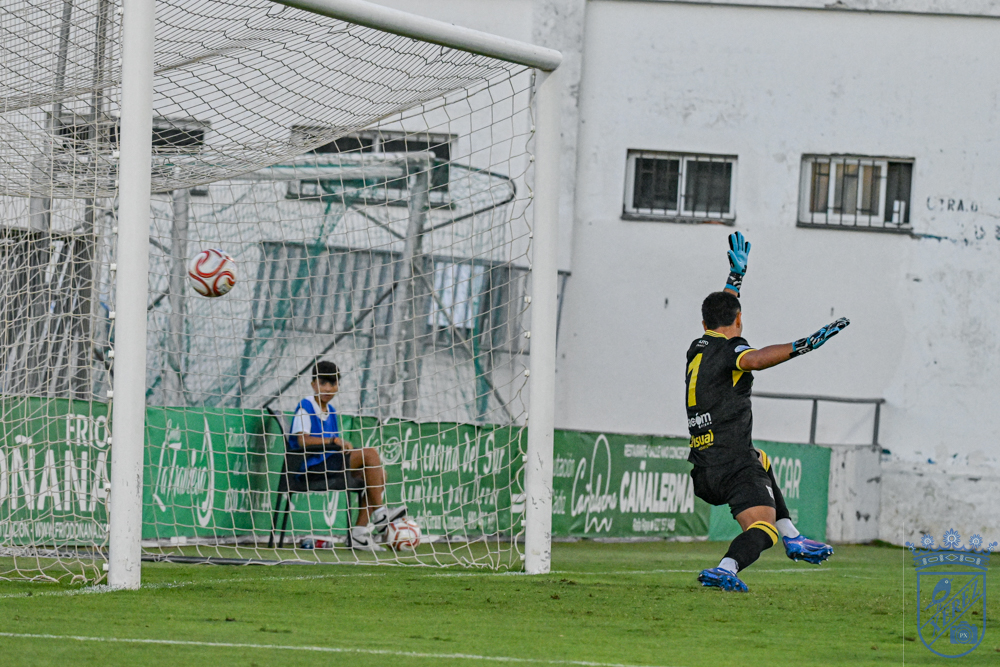

Al Xerez se le escapa el triunfo en el 92' cuando debió sentenciar antes
 Xerez CD
Xerez CDZelu había puesto por delante a los azulinos antes del descanso, pero un despiste atrás en el descuento permitió a Alfonso firmar el 1-1 definitivo
Julio Martínez se estrena con detalles prometedores, Víctor López suma sus primeros minutos veraniegos y Chuma sigue sin poder debutar por lesión
Se quedó el Xerez CD sin el broche de la victoria en su despedida de la pretemporada. Un tanto en la última jugada del partido frustró un cierre perfecto para el conjunto de Xavi Molist, que había hecho méritos de sobra para llevarse los tres puntos ante el Atlético Sanluqueño. El equipo azulino debió sentenciar ya en la primera mitad ante un rival impotente, incapaz de generar el más mínimo peligro durante buena parte del choque, pero la ventaja inicial firmada por Zelu se esfumó en el 92', cuando una desconexión defensiva permitió el empate rival en un encuentro en el que los azulinos generaron ocasiones a espuertas sin conseguir sentenciarlo. No fue un mal encuentro del Deportivo, pero la falta de puntería arriba terminó pasando factura, algo que a partir del próximo sábado, con la Liga ya en marcha, sí tendrá coste en forma de puntos.
La cita dejó, además, dos noticias en clave individual: Víctor López disputó sus primeros minutos del verano, mientras que Chuma continúa sin poder reaparecer por su lesión. En el otro extremo, hizo su presentación Julio Martínez, la última incorporación azulina, que dejó notas muy positivas nada más pisar el césped.
Un once de tintes ya ligueros
Xavi Molist repitió, salvo matices, lo que podría ser su alineación para el estreno liguero en campo del Estepona. De hecho, este once bien podría ser, con algún retoque, el que salga de inicio en ese debut oficial. Carlos Pantoja ocupó la portería, mientras que en defensa se dispuso una línea de cuatro con Guille Campos y Chacartegui como laterales y Manu Galán y Moisés como pareja de centrales. En el centro del campo, Raúl López e Isuskiza actuaron de doble pivote, con Mario Peregrina un escalón más arriba. Por las bandas se situaron Zequi y Zelu, dejando a Rubén Mesa como referencia en punta.
El arranque fue tranquilo, con una cartulina amarilla precoz para Moisés y algún destello de Peregrina, el futbolista más activo en ese primer cuarto de hora. Guille Campos probó a buscar a Zequi con un balón largo, pero el exjugador sanluqueño no ajustó bien el cuerpo y el central local, más listo en la pugna, terminó despejando el peligro.
Zelu rompe el marcador
El dominio era azulino, aunque con poca profundidad y un ritmo que beneficiaba a un rival —adversario directo esta temporada en el Grupo 4 de Segunda Federación— que llegaba tocado tras caer goleado en casa el día anterior frente al Betis Deportivo (0-3). El filón de los xerecistas apareció por el costado izquierdo, más por las incursiones de Chacartegui que por la aportación de Zequi, aunque, paradójicamente, el primer gol nació de una acción sanluqueña que la zaga azulina rechazó a esa misma zona: el balón le cayó de nuevo a Chacartegui, que puso un centro que Zelu, llegando desde el lado contrario, empujó al fondo de las mallas para el 0-1.

Foto: PuroXerecismoEl Xerez siguió a lo suyo. Raúl López estrelló una volea tras un rechace de córner apenas unos palmos por fuera del marco defendido por Fernando Valencia, y Rubén Mesa exigió una buena estirada del meta local con un disparo lejano. El aviso más claro para el 0-2 llegó diez minutos antes del intermedio: una diagonal de Moisés dejó completamente solo a Chacartegui —el más incisivo de los atacantes azulinos en la primera mitad—, que sin embargo desperdició el mano a mano al decidirse por un remate con la pierna menos favorecida que se marchó desviado.
Con el Xerez todavía crecido, un nuevo balón al espacio de Raúl López para Zelu generó otro sobresalto en el área rival: el centro del jerezano buscaba a Rubén Mesa, pero un defensor logró interceptarlo en el último instante. Ya en el descuento de la primera parte, fue Guille Campos quien avisó con un disparo lejano que se fue rozando el poste derecho.
Más ocasiones tras el descanso, pero sin premio
Molist movió el once en la reanudación, dando entrada a Josete, Fali y Marcos Alconchel por Moisés, Isuskiza y Pantoja. El nuevo bloque salió con energía y en apenas un minuto ya había generado dos oportunidades: un disparo de Zelu, tras cesión de Rubén Mesa, que se topó con un defensor, y una ocasión clarísima de Zequi, que tras un recorte hacia fuera mandó su zurdazo junto al palo.
El guion se mantuvo similar: dominio absoluto del Xerez CD, sin encontrar la manera de ampliar la renta. Otra galopada de Chacartegui por la izquierda derivó en un disparo de Raúl López desde la frontal que se marchó un palmo por encima del larguero. Pasada la hora de juego, el partido vivió un momento de tensión con un choque entre el local Otero y el azulino Óscar Lorenzo que provocó un pequeño tumulto; Ismael, que había saltado desde el banquillo, acabó siendo expulsado por el colegiado.
El Sanluqueño avisó, ya en la recta final, con su primera aproximación peligrosa del partido: una buena jugada por banda derecha terminó en un centro que Otero, completamente solo, remató por encima del larguero pese a tenerlo todo a favor. Poco antes, Julio Martínez había dispuesto de dos ocasiones inmejorables para estrenarse como goleador azulino, dejando sensaciones muy positivas en los minutos que disfrutó sobre el césped.
El palo final
El desenlace llegó cuando ya parecía sentenciado el resultado a favor del Xerez CD. En pleno tiempo añadido, un centro llegado desde la banda derecha no encontró rechace en el área azulina, y el balón acabó en los pies de Alfonso, que no perdonó para certificar el 1-1 definitivo. No hubo tiempo para más.
Ficha técnica
Atlético Sanluqueño: Fernando Valencia; Morillo (Marcos Álvarez, 60'), Aceituno (Ritore, 71'), Guedes (Mena, 60'), Ismael (Gaby, 60'); Iván Serrano, Poce, Aarón, Fernando (Ismael Salguero, 60'), Hugo Moriano (Alfonso, 68') y Abel (Otero, 46').
Xerez CD: Carlos Pantoja (Marcos Alconchel, 46'); Chacartegui (Abel Moreno, 60'), Manu Galán, Moisés (Josete, 46'), Guille Campos (Víctor López, 71'); Raúl López (Jaime López, 60'), Mario Peregrina (Leo Marín, 71'), Isuskiza (Fali, 46'); Zelu (Óscar Lorenzo, 60'), Zequi (Julio Martínez, 60') y Rubén Mesa.
Goles: 0-1 (23') Zelu. 1-1 (92') Alfonso.
Árbitro: Rubén Cartes Burgos, del colegio onubense. Mostró la roja directa al local Ismael (64') y también al entrenador de porteros del conjunto sanluqueño. Amonestó a los locales Hugo Moriano e Ismael Salguero, y a los visitantes Moisés, Óscar Lorenzo, Fali y Víctor López.
Incidencias: Encuentro amistoso jugado en El Palmar de Sanlúcar, con el terreno de juego en buen estado y una notable afluencia de aficionados xerecistas desplazados hasta el feudo sanluqueño.